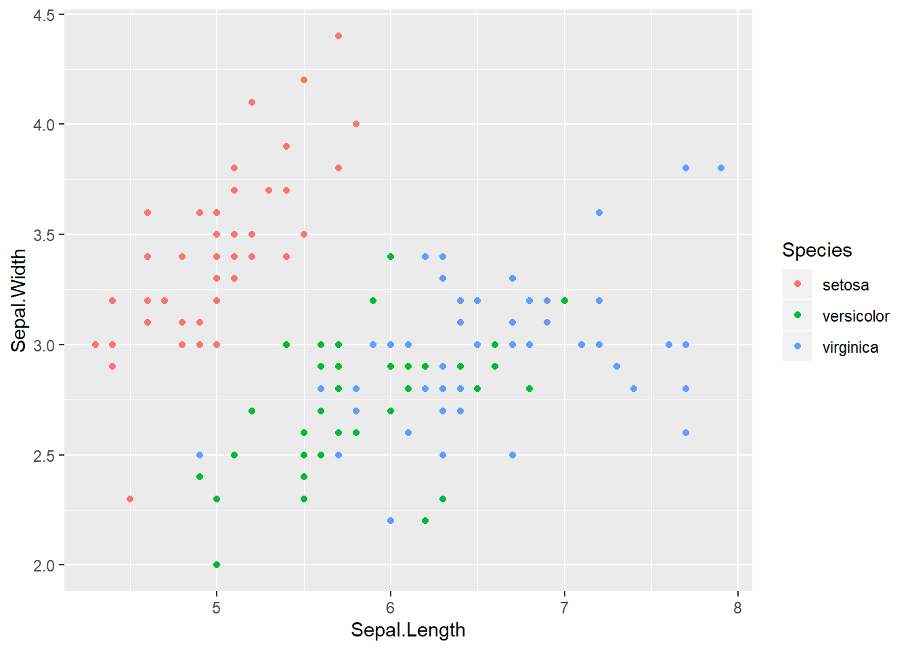
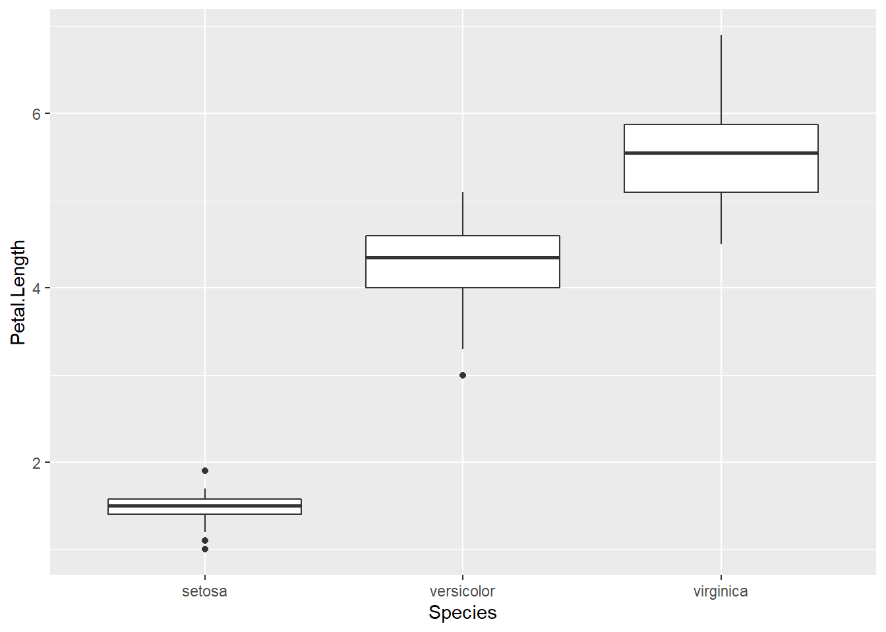
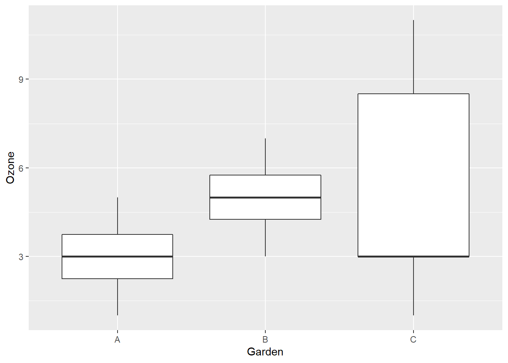
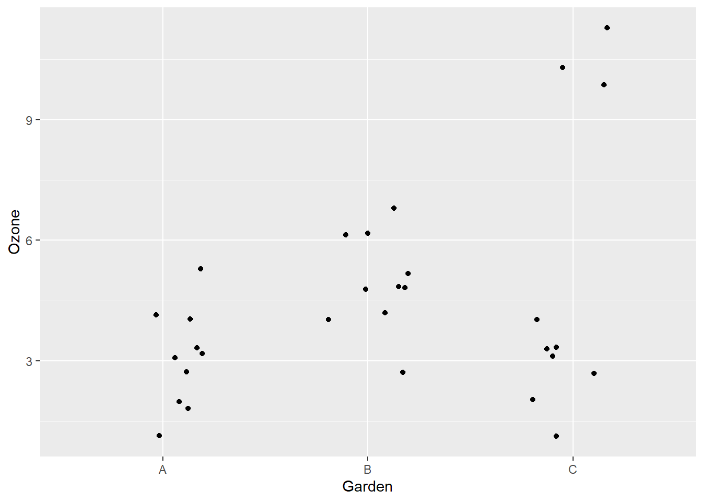

In this lab, you will apply the concepts seen during the last two classes.
For this exercise, we will use Edgar Anderson’s famous iris data set, which contains different measurements taken on 50 flowers of 3 iris species. This data frame is already loaded into R under the name iris.
data(iris)
head(iris)## Sepal.Length Sepal.Width Petal.Length Petal.Width Species
## 1 5.1 3.5 1.4 0.2 setosa
## 2 4.9 3.0 1.4 0.2 setosa
## 3 4.7 3.2 1.3 0.2 setosa
## 4 4.6 3.1 1.5 0.2 setosa
## 5 5.0 3.6 1.4 0.2 setosa
## 6 5.4 3.9 1.7 0.4 setosaSepal.Length andSepal.Width), differentiating the points of each species by color.library(ggplot2)
ggplot(iris, aes(x = Sepal.Length, y = Sepal.Width, color = Species)) +
geom_point()
How would you calculate the mean of Sepal.Width for species setosa and its 95% confidence interval?
The mean, standard error (which depends on the standard deviation and the number of points) and the probabilities of the \(t\) distribution at \(p\) = 0.025 and \(p\) = 0.975.
Sepal.Width for species setosa and its standard error.setosa <- iris[iris$Species == "setosa", ]
moy <- mean(setosa$Sepal.Width)
n <- nrow(setosa)
err_type <- sd(setosa$Sepal.Width) / sqrt(n)
c(moy, err_type)## [1] 3.4280000 0.0536078rnorm,dnorm, pnorm andqnorm which calculate values from the normal distribution. Similar functions exist for the \(t\) distribution (rt,dt, pt,qt). Let’s use the function qt(p, df) to determine the interval corresponding to 95% of the probability. What values of \(p\) (cumulative probability) should we use? How many degrees of freedom (\(df\)) based on sample size \(n\)?\(p =\) 0.025 and 0.975, \(df = n - 1\).
ic_min <- moy + qt(0.025, df = n - 1) * err_type
ic_max <- moy + qt(0.975, df = n - 1) * err_type
c(ic_min, ic_max)## [1] 3.320271 3.535729If we repeated the sampling of 50 iris in that population of species setosa, in 95% of cases the confidence interval calculated for the sample mean would contain the population mean.
Imagine you want to determine the mean and standard deviation of the growth rate of yellow birch seedlings in a given region. Your sampling unit is a 1 m\(^2\) quadrat where the annual growth of seedlings is measured. Which sampling method would you recommend for the placement of these quadrats according to the different scenarios presented, and why? You can choose stratified, cluster, systematic, or adaptive sampling.
Cluster sampling, to reduce travel time and sample more individuals in a few stands.
Systematic, to spread out sampling units along the gradient.
Stratified, to ensure all stand types are well sampled.
Adaptive, to focus sampling effort around points where the species was detected.
For this exercise, we will compare simple and stratified sampling from simulated samples from the iris data frame.
ggplot(iris, aes(x = Species, y = Petal.Length)) +
geom_boxplot()
iris_alea andiris_strat. The first function chooses 30 random observations of iris, then returns the mean of Petal.Length for these observations. The second chooses 10 random observations from each of the three species, then returns the mean of Petal.Length (overall mean, not by species).Notes:
The sample(x, size) function in R simulates sampling a number of values (given by size) from the values in vector x.
You can write these functions without arguments (empty parentheses after function), as in the example below.
iris_alea <- function() {
# Insert function code here
}iris_alea <- function() {
samp <- sample(iris$Petal.Length, 30)
mean(samp)
}
iris_strat <- function() {
samp1 <- sample(iris$Petal.Length[iris$Species == "setosa"], 10)
samp2 <- sample(iris$Petal.Length[iris$Species == "versicolor"], 10)
samp3 <- sample(iris$Petal.Length[iris$Species == "virginica"], 10)
samp <- c(samp1, samp2, samp3)
mean(samp)
}
iris_alea()## [1] 3.853333iris_strat()## [1] 3.693333replicate, as follows:rep_alea <- replicate(1000, iris_alea())
rep_strat <- replicate(1000, iris_strat())Calculate the standard error of each mean (from the standard deviation of rep_alea and rep_strat). Before running the calculation, can you predict which method will be more precise and why?
sd(rep_alea)## [1] 0.2936105sd(rep_strat)## [1] 0.06985088The standard error of the stratified sampling mean (standard deviation of rep_strat) is about 4 times smaller than for random sampling (s.d. of rep_alea). This is due to the fact that petal length varies more between species than within a species.
For this exercise, we will use the gardens.csv dataset, which comes from Michael Crawley’s book Statistics: An Introduction Using R. These data represent ozone concentrations (in parts per 100 million or pphm) measured in three gardens (A, B and C) on different days.
gardens <- read.csv("gardens.csv")Here is one option, with a boxplot:
library(ggplot2)
ggplot(gardens, aes(x = Garden, y = Ozone)) +
geom_boxplot()
Here are individual points with geom_jitter. It is like geom_point but spaces the points randomly along x to separate points with the same y:
ggplot(gardens, aes(x = Garden, y = Ozone)) +
geom_jitter(width = 0.2)
The width argument of geom_jitter determines the level of random dispersion in x. It must be large enough to see all points, but not too large as to blur the separation between groups.
Note: The function tapply(X, INDEX, FUN) applies a function given by FUN to vector X separately for each factor given by INDEX. Therefore we can calculate the mean ozone concentration by garden with tapply(gardens$Ozone, gardens$Garden, mean).
tapply(gardens$Ozone, gardens$Garden, mean)## A B C
## 3 5 5tapply(gardens$Ozone, gardens$Garden, sd)## A B C
## 1.154701 1.154701 3.771236Garden C has a much higher standard deviation. But the mean of 5 is also not a typical value, since we have 7 points between 1 and 4, and 3 between 10 and 11.
gardensAB <- gardens[gardens$Garden != "C", ]
t.test(Ozone ~ Garden, data = gardensAB, conf.level = 0.99)##
## Welch Two Sample t-test
##
## data: Ozone by Garden
## t = -3.873, df = 18, p-value = 0.001115
## alternative hypothesis: true difference in means is not equal to 0
## 99 percent confidence interval:
## -3.4864203 -0.5135797
## sample estimates:
## mean in group A mean in group B
## 3 5The estimate of \(\mu_A - \mu_B\) is -2 with a confidence interval (-3.5, -0.5). The null hypothesis is rejected.
As noted above, both gardens have a similar ozone concentration distribution, except that the mean of garden B is higher. So here, the \(t\)-test represents well the difference between the two.
gardensAC <- gardens[gardens$Garden != "B", ]
t.test(Ozone ~ Garden, data = gardensAC, conf.level = 0.99)##
## Welch Two Sample t-test
##
## data: Ozone by Garden
## t = -1.6036, df = 10.673, p-value = 0.138
## alternative hypothesis: true difference in means is not equal to 0
## 99 percent confidence interval:
## -5.897603 1.897603
## sample estimates:
## mean in group A mean in group C
## 3 5The estimate of \(\mu_A - \mu_C\) is -2 with a confidence interval (-5.9, 1.9). The null hypothesis is not rejected.
The difference between the means of A and C is the same as the difference between the means of A and B, but Garden C has a larger variance, which is why the difference is not significant. However, as we saw earlier, the mean does not describe well the Garden C data and the distribution is very far from normal. In this case, the \(t\)-test is probably not a good way to describe the difference between groups.